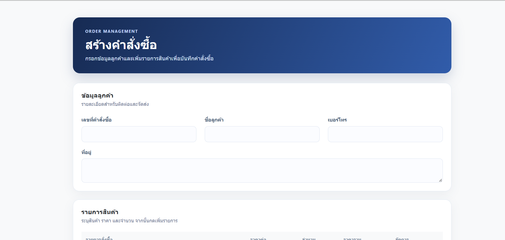

Backend & Web
Python, Java, FastAPI, Spring Boot, REST API, HTML, CSS และ JavaScript
ABOUT ME
ผมเป็นนักศึกษาชั้นปีที่ 3 สาขาเทคโนโลยีสารสนเทศอัจฉริยะ มหาวิทยาลัยวลัยลักษณ์ สนใจการพัฒนาระบบหลังบ้าน การจัดการฐานข้อมูล และการทดสอบซอฟต์แวร์
จากการเรียนและทำโครงการ ผมได้ฝึกพัฒนา API จัดการข้อมูลจากเอกสาร และทดสอบการทำงานของระบบ ปัจจุบันกำลังมองหาโอกาสฝึกสหกิจเพื่อเรียนรู้จากการทำงานจริง พัฒนาทักษะ และนำความรู้ไปช่วยสนับสนุนงานของทีม
SKILLS & TOOLS
เทคโนโลยีที่เคยใช้ในการเรียนและพัฒนาโครงการ
Python, Java, FastAPI, Spring Boot, REST API, HTML, CSS และ JavaScript
MongoDB, SQLite, PostgreSQL, SQLAlchemy และ ChromaDB
pytest, unittest, Swagger, Git, Docker และ Docker Compose
SELECTED PROJECTS
ระบบนำเข้าเอกสาร PDF และ DOCX ตรวจสอบไฟล์ สกัดข้อความและตาราง รวมถึงจัดเก็บข้อมูลเพื่อใช้งานต่อ
รับผิดชอบส่วน Import และหน้า Preview สำหรับตรวจสอบและแก้ไขข้อมูลก่อนยืนยัน รวมถึงการแบ่งข้อความและจัดเก็บ vector embeddings
ระบบจัดการขั้นตอนงานและติดตามสถานะเอกสารอย่างยืดหยุ่น
สร้าง workflow และจัดการรายการงาน เปลี่ยนสถานะ บันทึก timeline สร้างหมายเลขอ้างอิง พร้อม REST API, Swagger และ automated testing
ระบบจัดการคำสั่งซื้อที่รองรับสินค้าหลายรายการและคำนวณยอดรวม

พัฒนาระบบจัดการคำสั่งซื้อแบบ CRUD รองรับสินค้าหลายรายการ คำนวณยอดรวมอัตโนมัติ และจัดเก็บข้อมูลด้วย H2 Database โดยออกแบบ Backend แยกเป็น Controller, Service, Repository และ Model พร้อมรันระบบผ่าน Docker Compose
กรณีศึกษาการออกแบบ Test Case เพื่อตรวจสอบความถูกต้องของฟังก์ชันและกระบวนการทำงานของระบบ
พัฒนา Test Case ด้วย Python unittest รวม 30 กรณี ครอบคลุมการทำงานปกติ ค่าขอบเขต ข้อมูลผิดพลาด และการเปลี่ยนแปลงสถานะของระบบ พร้อมรันทดสอบอัตโนมัติผ่าน GitHub Actions
GET IN TOUCH
ยินดีพูดคุยเกี่ยวกับโอกาสฝึกสหกิจและการเรียนรู้ด้านเทคโนโลยี